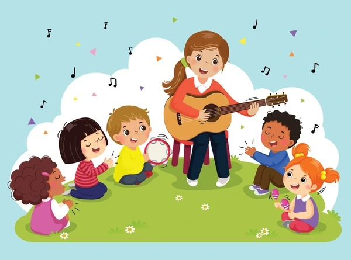

CANCIONES
Los cuentos infantiles han desempeñado un papel fundamental en el desarrollo de la infancia a lo largo de la historia. Desde tiempos inmemorables, estas narrativas han sido más que simples relatos; son ventanas a mundos imaginarios, herramientas educativas y compañeros en el viaje hacia el crecimiento personal.
En nuestra página didáctica, nos enorgullece ofrecer una selección diversa de cuentos diseñados para enriquecer la experiencia de aprendizaje de niños de 0 a 10 años.
Cada historia ha sido cuidadosamente seleccionada para inspirar, educar y acompañar a los pequeños en su viaje de descubrimiento.
Beneficios de la música en la educación de los niños
Los cuentos infantiles son tesoros pedagógicos que despliegan un sinfín de beneficios en el desarrollo integral de los niños. Más allá de las páginas y las ilustraciones, los cuentos son herramientas mágicas que nutren la mente y el corazón de los pequeños.
Los cuentos enseñan valores fundamentales y promueven el desarrollo emocional al explorar diversas emociones y situaciones. Además, actúan como puentes entre padres e hijos, fortaleciendo vínculos afectivos y creando recuerdos compartidos.Desde la preparación para la lectura hasta la construcción de identidad y valores, los cuentos se erigen como aliados poderosos en el viaje de descubrimiento y crecimiento de los niños, dejando huellas imborrables en su camino hacia el aprendizaje y la comprensión del mundo que les rodea.
Cuentos para los Pequeñitos Exploradores
Desde los primeros días de vida, sumérgete en los "Cuentos para los Pequeñitos Exploradores". Diseñados para bebés y niños de 0 a 3 años, estos cuentos ofrecen una experiencia sensorial única.
Los cuentos infantiles son faros luminosos en el vasto océano del desarrollo infantil. Más allá de simples relatos, ofrecen un viaje fascinante que abraza tanto el corazón como la mente de los pequeños. Estos relatos mágicos no solo son portadores de palabras e imágenes; son arquitectos de un sinfín de beneficios que esculpen el futuro de los niños.